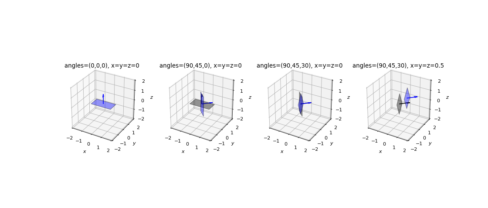
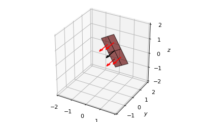
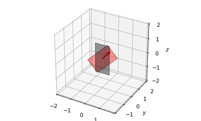
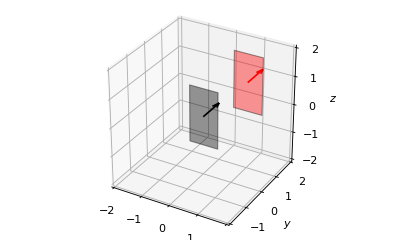

Rectangular Plane¶
-
class
owcsimpy.geoobjects.bases.rectplane_py.RectPlane_py(normalVect, ctrPoint=None, RodriguesAngle=0, dimensions=None, verts=None, identity=[inf], m=1, FoV=1.5707963267948966, reflectivity=1)[source]¶ A 3D rectangular plane.
- Parameters
- normalVect: Vector_py
Its normal vector.
- ctrPoint: ndarray(3,)
Defines the center point of the rectangular plane.
- RodriguesAngle: float
The angle of Rodrigues rotation w.r.t. the normal vector. This follows the right-hand rule.
- dimensions: array-like with 2 elements
The dimensions are defined as, for example, [L,W], where L is the length and W is the width.
- verts: ndarray(4,3)
The four vertices of the plane.
- identity: list
Identity of the object. It is used to track down which parent object this object is from. Mainly used for debugging purposes.
- m: float
The Lambertian mode.
- FoV: float
Field of view in rads.
- reflectivity: float
Reflectivity of the surface.
- Raises
- NotImplementedError:
When the parameters don’t follow neither of two methods.
See also
Notes
There are two different ways of instantiating a rectangular plane, i.e.,:
defining its normal vector, its center point, its Rodrigues angle (w.r.t. its normal vector), and its dimensions (length and width),
defining its four vertices.
Following is the original position of a rectangular plane, i.e., the plane faces upwards.
z : * * * * * ^ n +++ +++++ * * y * ::: W :***: * ::::::: :*IIVFNN$$$$$NNVII*: :::::: :**IV$$N$$$$$$$$$$$$$M$$$$NN$VVII*::: *IVF$N$$$$$$$$$$$$$$$$$$$$M$$NNNNNNN$$N$FVI*:: :*IV$NN$$$$$$$$$$$$$$$$$$MNNN$$$$$$$$$$$$$$$N$VVI*: *II$NN$$$$$$$$$$$$$$$$NNNNNNN$$$$$$$$$$$$$$NN$I :*IF$N$$$$$$$$$$$$$$$$$NNNNNNN$$$NN$VI: :*IV$N$$$$$$$$$$$$$$$$$$N$VVI:: L :*IV$NN$$$$$$$N$VI*: ::::::: *IV$$VI*: ::::::: ::::::: :::::: xExamples
>>> import matplotlib.pyplot as plt >>> import numpy as np >>> >>> from owcsimpy.geoobjects.bases.vector_py import Vector_py as Vector >>> from owcsimpy.geoobjects.bases.rectplane_py import RectPlane_py as RectPlane >>> from owcsimpy.geoutils.draw import draw >>> >>> def genPlane(polar,az,Rod,translation): >>> >>> v = Vector(np.array([1,np.deg2rad(polar),np.deg2rad(az)])) >>> ctrPoint=np.array(3*[translation]) >>> plane = RectPlane(normalVect=v,ctrPoint=ctrPoint, >>> RodriguesAngle=np.deg2rad(Rod),dimensions=[2,1]) >>> >>> return plane >>> >>> >>> # Will draw 4 different canvases >>> fig,axs = draw(subplots=True,figsize=(14,6),nrows=1,ncols=4,xlim=[-2,2],ylim=[-2,2],zlim=[-2,2]) >>> >>> # Original position >>> polar,az,Rod=0,0,0 # polar, azimuth, Rodrigues >>> translation=0 >>> plane = genPlane(polar,az,Rod,translation) >>> >>> fig,axs[0] = draw(figure=fig,axes=axs[0],planes=plane,colors='blue',facecolors='blue') >>> axs[0].set_title("angles=({},{},{}), x=y=z={}".format(polar,az,Rod,translation)) >>> >>> # Polar and azimuth >>> # Copy previous object as a reference (black) >>> fig,axs[1] = draw(figure=fig,axes=axs[1],planes=plane,colors='black',facecolors='black') >>> >>> polar,az,Rod=90,45,0 # polar, azimuth, Rodrigues >>> translation=0 >>> plane = genPlane(polar,az,Rod,translation) >>> >>> fig,axs[1] = draw(figure=fig,axes=axs[1],planes=plane,colors='blue',facecolors='blue') >>> axs[1].set_title("angles=({},{},{}), x=y=z={}".format(polar,az,Rod,translation)) >>> >>> # Rodrigues >>> # Copy previous object as a reference (black) >>> fig,axs[2] = draw(figure=fig,axes=axs[2],planes=plane,colors='black',facecolors='black') >>> >>> polar,az,Rod=90,45,30 # polar, azimuth, Rodrigues >>> translation=0 >>> plane = genPlane(polar,az,Rod,translation) >>> >>> fig,axs[2] = draw(figure=fig,axes=axs[2],planes=plane,colors='blue',facecolors='blue') >>> axs[2].set_title("angles=({},{},{}), x=y=z={}".format(polar,az,Rod,translation)) >>> >>> # Translation >>> # Copy previous object as a reference (black) >>> fig,axs[3] = draw(figure=fig,axes=axs[3],planes=plane,colors='black',facecolors='black') >>> >>> polar,az,Rod=90,45,30 # polar, azimuth, Rodrigues >>> translation=0.5 >>> plane = genPlane(polar,az,Rod,translation) >>> >>> fig,axs[3] = draw(figure=fig,axes=axs[3],planes=plane,colors='blue',facecolors='blue') >>> axs[3].set_title("angles=({},{},{}), x=y=z={}".format(polar,az,Rod,translation)) >>> >>> >>> plt.show()
Angles are defined as polar, azimuth and Rodrigues’ angles in order. The left figure shows a rectangular plane in its original position (no rotation and translation). Then, transformations are carried out w.r.t. the spherical coordinates rotation, Rodrigues’ rotation and translation in order.
- Attributes
- normalVect: ndarray(3,)
Normal vector as a ndarray type
- ctrPoint: ndarray(3,)
- verts: ndarray(4,3)
- area: float
Area of the square plane
- L: float
Length
- W: float
Width
- identity: list
- m: float
- FoV: float
- reflectivity: float
-
getPartition(self, Ps=[1, 1], delta=None)[source]¶ Get a list of partitioned planes.
- Parameters
- Ps: list
List of number of partition of each side.
- delta: list
Define the partition based on partition lengths
- Returns
- list:
A list of partitioned planes. Each plane is an instant of RectPlane_py.
Notes
0 1 _________,_________,_________, | | | | | | | | |________|_________|_________| | | | | l_03 | | | | l_12 |________|_________|_________| | | | | | | | | \./_______|_________|________\./ 3 2- Steps:
Get parametric lines l_03 and l_12
Get row-major parametric lines whose initial and end points are obtained from l_03 and l_12
Get matrix of vertices
Create a subplane from the matrix
For future works, it would be more efficient if we have private attributes on the spherical and Rodrigues’ rotations, then we can partition the original position rectangular plane and do rotation and translation afterwards.
Examples
>>> import matplotlib.pyplot as plt >>> import numpy as np >>> >>> from owcsimpy.geoobjects.bases.vector_py import Vector_py as Vector >>> from owcsimpy.geoobjects.bases.rectplane_py import RectPlane_py as RectPlane >>> from owcsimpy.geoutils.draw import draw >>> >>> # Original position >>> polar,az,Rod=90,-90,30 # polar, azimuth, Rodrigues >>> translation=0.5 >>> v = Vector(np.array([1,np.deg2rad(polar),np.deg2rad(az)])) >>> ctrPoint=np.array(3*[translation]) >>> plane = RectPlane(normalVect=v,ctrPoint=ctrPoint, >>> RodriguesAngle=np.deg2rad(Rod),dimensions=[2,1]) >>> >>> subplanes = plane.getPartition(2) >>> fig,ax = draw(planes=subplanes,xlim=[-2,2],ylim=[-2,2],zlim=[-2,2]) >>> # For reference >>> draw(figure=fig,axes=ax,planes=plane,facecolors='black',colors='black') >>> >>> plt.show()

-
getSimplePlane(self)[source]¶ Extract necessary information as ndarray without methods.
A simpleplane will be simply as a tuple of normalVect, ctrPoint, verts and area.
- Returns
- (revised)
- tuple:
- (normalVect: ndarray(3,)
ctrPoint: ndarray(3,) verts: ndarray(4,3) area: double m: double FoV: double reflectivity: double)
- (previous)
- tuple:
(normalVect: ndarray(3,) ctrPoint: ndarray(3,) verts: ndarray(4,3) area: double)
Notes
The order of the output matters.
-
rotate(self, theta, refVector)[source]¶ Rotate the plane w.r.t. to a reference vector.
- Parameters
- theta: float
- refVector: ndarray(3,) or Vector_py
- Returns
- RectPlane_py
Examples
>>> import matplotlib.pyplot as plt >>> import numpy as np >>> >>> from owcsimpy.geoobjects.bases.vector_py import Vector_py as Vector >>> from owcsimpy.geoobjects.bases.rectplane_py import RectPlane_py as RectPlane >>> from owcsimpy.geoutils.draw import draw >>> >>> # Prepare a canvas >>> fig,ax = draw(xlim=[-2,2],ylim=[-2,2],zlim=[-2,2]) >>> v = Vector(np.array([1,np.deg2rad(90),np.deg2rad(90)])) >>> plane = RectPlane(normalVect=v,ctrPoint=np.zeros(3),dimensions=[2,1]) >>> fig,ax = draw(figure=fig,axes=ax,planes=plane,facecolors='black',colors='black') >>> plane = plane.rotate(np.deg2rad(45),plane.normalVect) >>> fig,ax = draw(figure=fig,axes=ax,planes=plane,facecolors='red',colors='red')

-
translate(self, newCtrPoint)[source]¶ Translate the plane to a new center point.
- Parameters
- newCtrPoint: ndarray(3,)
- Returns
- RectPlane_py
Examples
>>> import matplotlib.pyplot as plt >>> import numpy as np >>> >>> from owcsimpy.geoobjects.bases.vector_py import Vector_py as Vector >>> from owcsimpy.geoobjects.bases.rectplane_py import RectPlane_py as RectPlane >>> from owcsimpy.geoutils.draw import draw >>> >>> # Prepare a canvas >>> fig,ax = draw(xlim=[-2,2],ylim=[-2,2],zlim=[-2,2]) >>> v = Vector(np.array([1,np.deg2rad(90),np.deg2rad(90)])) >>> plane = RectPlane(normalVect=v,ctrPoint=np.zeros(3),dimensions=[2,1]) >>> fig,ax = draw(figure=fig,axes=ax,planes=plane,facecolors='black',colors='black') >>> plane = plane.translate(np.ones(3)) >>> fig,ax = draw(figure=fig,axes=ax,planes=plane,facecolors='red',colors='red')
